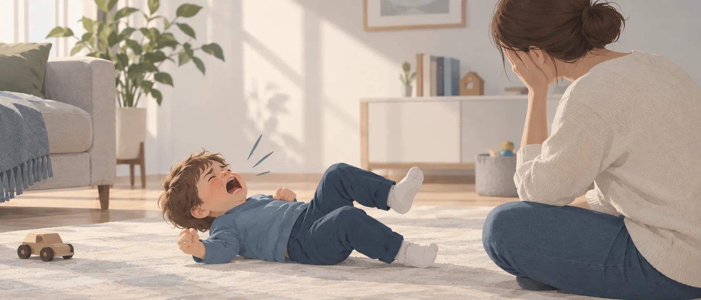

Как бороться с детскими истериками?
ТРУДНОСТЬ
Когда вашему малышу что-то не нравится, он начинает кричать, топать ногами и кидать на пол вещи. Вам это знакомо? Не отчаивайтесь, Вы можете помочь своему ребенку перестать капризничать. Однако сначала стоит подумать, что его к этому побуждает.
ПРИЧИНЫ
1) Маленькие дети еще не научились справляться со своими эмоциями
2) Изменение в мышлении ребёнка
Подумайте, как сильно изменяется сознание двухлетнего малыша. С момента его рождения родители старались удовлетворить каждую его потребность. Если он плакал, они тут же бежали к нему. Родители делали все возможное для своего ребенка.
Однако в возрасте примерно двух лет ребенок начинает осознавать, что теперь родители уже не спешат исполнить все его желания, а он должен слушаться их. Ситуация изменилась, и у малыша это может вызывать протест в виде истерик.
Со временем ребенок обычно смиряется с фактом, что родители не только нянчатся с ним, но и воспитывают. И он начинает понимать, что его задача — быть послушным родителям. Но пока он может испытывать родительское терпение, устраивая одну истерику за другой.
ЧТО МОЖНО ПРЕДПРИНЯТЬ?
Не давайте слабину и будьте последовательны. Один известный психолог советовал: «Пусть ваше „да“ означает „да“ и ваше „нет“ — „нет“». Если вы уступите капризу ребенка, то в следующий раз он, захотев чего-то, опять устроит вам истерику. Спокойно дайте ему понять, что вы тверды в своем слове. Насколько это возможно, не обращайте внимания на его «скандальное» поведение и продолжайте делать свои дела. Помните, почему случаются истерики, и это поможет вам держать себя в руках.
«Когда кто-то из родителей жалуется, что его ребенок не понимает слово „нет“, у меня это вызывает усмешку. О родителе это говорит больше, чем о ребенке. Если ребенок не понимает слово „нет“, значит, родитель не может его как следует сказать. Проблема не в ребенке, просто ему не дали понять, что родители тверды в своем слове». — Джон Роузмонд (цитата из книги «Новая власть родителей»)
«Пусть ваше „да“ означает „да“ и ваше „нет“ — „нет“» — цитата из книги «Священное Писание»
Мы терпеливы к тем, кого любим. Не ожидайте, что истерики прекратятся сразу, особенно если ребенок уже почувствовал, что вами можно манипулировать. Если же вы будете правильно и последовательно реагировать на истерики и капризы, они, скорее всего, постепенно сойдут на нет.
Также попробуйте следующее:
- Когда у ребенка начинается истерика, если возможно, возьмите его на руки и, не причиняя малышу вреда, не давайте ему пинаться и швырять вещи. Не кричите на него. Просто ждите, пока он успокоится. В конце концов ребенок поймет, что истерикой он ничего не добьется.
- Когда ребенок начинает истерику, отведите его, скажем, в спальню и оставьте его там, объяснив, что когда он успокоится, то сможет выйти.
- Если ребенок устраивает истерику на людях, уведите его из поля зрения других. Не идите у него на поводу только потому, что он устроил вам сцену. Это лишь убедит его в том, что, закатив истерику, он может добиться желаемого.